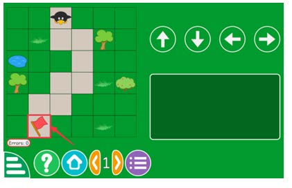

Figure 3: Path encoding game
2. Remember, the arrows always move the Tux in the direction as indicated:
↑ means up,
↓ means down,
← means left, and
→ means right, no matter which direction Tux is facing.
Figure 3 shows a path encoding game.
Note:
You can try to play different levels of the game and resolve many paths.